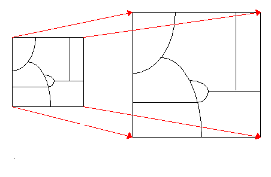

Ajuste espacial
El geoproceso ajuste espacial permite aplicar una transformación sobre los elementos geográficos de una
capa vectorial.
Actualmente admite los siguientes tipos de transformación:

Además de la capa a transformar, requiere un conjunto de puntos de control que representan la posición de un punto antes de la transformación, y la posición que este mismo punto deberá tener como resultado de la misma. En función del tipo de transformación será necesario un número mínimo de puntos de control. Lo habitual es proporcionar un número muy superior al mínimo, en cuyo caso gvSIG realizará un ajuste mínimo cuadrático de los parámetros de la transformación requerida. Como parámetro que refleje la bondad de la transformación se proporciona el error medio cuadrático (RMS) de cada punto de control individual, y el error medio cuadrático global de todos los puntos de control.